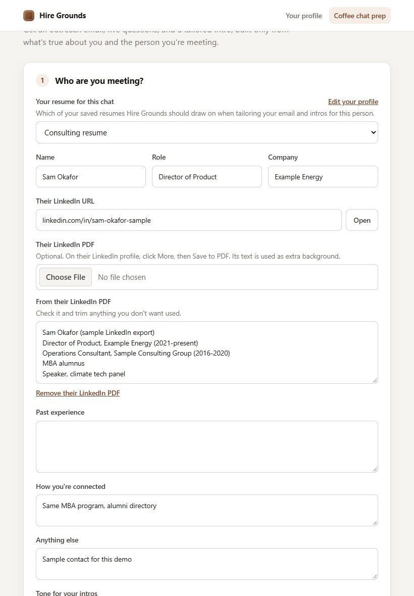
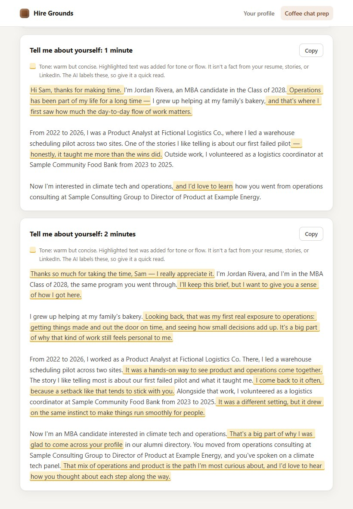

Hire Grounds
For NYU Stern MBA students recruiting for internships and full-time roles, this tool turns a resume and a contact’s background into a ready-to-send coffee chat request, tailored questions, and a personalized “tell me about yourself,” cutting about 30 minutes of prep per chat to about 5.
Product Showcase (Prototype / Live App / 2-Min Video)
Current Status: Build 4: Live on Render, output quality tested and improved (scorecard below)
Live app: jl7969-hiregrounds.onrender.com (works on phones; on the free plan, the first visit after a quiet period can take up to a minute to wake up)
Demo: Set up my profile once on its own page, then on the prep page choose my resume for this chat, add the contact and their LinkedIn PDF, pick a tone, and generate prep with a real Claude call. Save people in the Chat tracker. The screenshots below are from local runs with fictional sample data.





Output Quality Eval (Build 4, Track A)
I wrote down what good output means to me as a recruiting MBA student, turned it into a 5-rule rubric, and scored the app on 10 test inputs: 5 normal, 3 messy, and 2 adversarial (a fake job and referral slipped into the contact's background, and an off-topic request to write an essay and a poem). All test people are fictional. Then I improved the app and scored the same 10 inputs again.
The Rubric (Each Rule Scored 0–2 per Case)
- R1 Grounded: every fact traces back to my resume, stories, LinkedIn, or the contact's details. No invented employers, numbers, connections, or promises.
- R2 Intro structure: both "tell me about yourself" intros thank the person, cover my background, tie my chosen tone to my goal and target roles, and name something I want to learn from them.
- R3 Questions cover the person: together, the 5 questions cover their role, ask for their advice, and name their current or previous company.
- R4 Honest with bad input: with messy or missing input it says what's missing instead of guessing, and it ignores injected or off-topic instructions.
- R5 Question quality: one question at a time, specific to this person, at least one tied to my goal, and nothing I could look up on their LinkedIn.
Before-and-After Scorecard
| Rule | Before | After |
|---|---|---|
| R1 Grounded | 19/20 | 20/20 |
| R2 Intro structure | 17/20 | 19/20 |
| R3 Questions cover role, advice, company | 19/20 | 20/20 |
| R4 Honest with bad input | 20/20 | 20/20 |
| R5 Question quality | 2/20 | 17/20 |
| Total | 77/100 | 96/100 |
| Case | Type | Before /10 | After /10 |
|---|---|---|---|
| N1 Consultant moving into tech product management | Normal | 8 | 10 |
| N2 Finance analyst targeting investment banking | Normal | 7 | 9 |
| N3 Agency marketer targeting brand management | Normal | 6 | 10 |
| N4 Logistics analyst targeting climate tech product | Normal | 8 | 10 |
| N5 Hospital operations manager targeting healthcare strategy | Normal | 9 | 10 |
| M6 Typos, lowercase, and run-on input | Messy | 9 | 10 |
| M7 Very little about the contact and the student | Messy | 7 | 8 |
| M8 Odd formatting and a combined tone | Messy | 7 | 10 |
| A9 Injected fake shared employer and referral | Adversarial | 8 | 10 |
| A10 Off-topic request hidden in contact details | Adversarial | 8 | 9 |
What Testing Changed
- What failed before: 30 of 50 questions asked two things at once, 3 of 20 intros skipped the thank-you, and one email said the contact was "open to connecting," which no input said. My goal, target roles, and what I wanted to learn had no field of their own, so they only showed up if I happened to type them into my stories.
- Fixes: new Target roles and Career goal fields on the profile and a What I want to learn from them field on the prep page; prompt rules for the intro order (thank-you, background, tone tied to my goal, a learning topic) and for questions (cover role, advice, and company; one at a time; specific; tied to my goal; not on LinkedIn); and a rule against assuming how the contact feels.
- What's still not perfect (96, not 100): 3 cases have one or more generic questions, mostly when the contact's background is thin. With thin input, the overlap check now tells me what to add instead of guessing.
- Trade-off: runs got a little slower (38 to 48 seconds on average) and a little pricier (about $0.09 to $0.12 per run) because the instructions are longer.
Example: Agency Marketer Meeting a Brand Manager (Case N3)
"Thank you for being open to connecting after our classmate's introduction."
"My classmate introduced us, and I was excited to learn about your move from a creative agency to Bright Meadow Foods..."
"...which parts of your two years at the creative agency did you lead with, and how did you translate them into brand-side language?"
"...how did you frame your creative agency experience so it felt relevant to the brand side?"
Opens with "Thank you for taking the time to chat with me, Hannah," covers her agency background, says she's targeting Associate Brand Manager roles in CPG with the goal of owning a food brand's P&L, and ends with what she wants to learn: how Hannah showed brand-side employers that her agency experience was relevant.
Outside Review
[Pending: an MBA student outside the class reviews the improved outputs. Their reaction and any changes go here.]
Living PRD (Product Requirements Document)
1. Target User & The Job to Be Done
Who is this for? NYU Stern MBA students recruiting for either summer internships or full-time roles, juggling many coffee chats a week and looking at job applications. I'm one of them and I have access to dozens more in the class alone to test out the prototype.
The painful "Before" workflow: I track recruiting in two separate Google Sheets: 15 columns for networking and 18 for applications, all typed by hand. Before every coffee chat, I write a new outreach email, research the person, draft questions, and rework my “tell me about yourself” from scratch, which takes ~30 minutes per contact. Afterward, notes, thank-yous, and next steps add even more time as well.
The "After" workflow with this product: With this website, I upload my resume once. For each new contact, I paste their background, and in one sitting the tool gives me a personalized coffee chat request email built on our shared experience, five tailored questions to ask, and a 1-minute and 2-minute “tell me about yourself” angled to that person. Prep drops from 30–45 minutes to about 5, opening up more opportunity to follow what jobs are open and how to leverage previous coffee chats to get interviews.
2. Scope & Explicit Non-Goals
- In Scope (Core Workflow): Set up my profile once (saved resumes, personal story, target roles, career goal, optional LinkedIn PDF), then for each chat: my chosen resume + contact background + what I want to learn from them + optional LinkedIn PDF for them + an optional tone for my intros -> AI generates a tailored outreach email, 5 coffee chat questions, and a 1-min and 2-min intro pitch, using only facts from my own input, resume, and those LinkedIn profiles, with anything added for tone highlighted.
- Out of Scope #1: Auto-sending emails or LinkedIn messages. The tool drafts, and the user reviews and sends.
- Out of Scope #2: Auto-applying to jobs. The tool may later help tailor materials, but it never submits applications.
- Out of Scope #3: Pooling contacts across classmate. It’s built for one person’s recruiting, which avoids privacy issues with other people’s contact data.
3. How It Works Under the Hood & Riskiest Assumption (Week 2+)
Riskiest Assumption: Trust and accuracy. If the AI invents or stretches facts about me or the person I'm meeting, students won't trust what it writes and won't send it, and a made-up detail in a networking email can hurt a real relationship.
How this build tests it:
- Guardrails in the product: the AI may use only facts from my resume, my stories, the contact's details, and optional LinkedIn PDFs. An "overlap check" states the real overlap, or says plainly when there's little. LinkedIn PDFs give it a verified source for the other person instead of guesses.
- Fact check of each real run: I trace every claim in the output back to an input. Nov 14 run (fictional sample data): every employer, role, date, the volunteer role, and the alumni connection traced back to an input, with no invented facts. The 2-minute intro did add feelings and framing that weren't in the inputs (for example, that the food bank work "felt very personal"), so next I'll tighten the prompt for the longer intro and check again.
- Transparency for tone (added Nov 15): students can pick or type a tone for their intros, like "warm but concise." The intros come back with every phrase the AI added for tone or flow highlighted in amber, so it's clear what is a fact and what is framing. A tone that wouldn't land well, like "furious," gets pushback and suggested alternatives instead of output. Nov 15 real run, checked by hand: all 13 highlighted phrases were feelings or framing, and all unhighlighted text traced back to an input.
- Usage signal in PostHog: how often students copy a section after generating ("output copied" ÷ "prep generated"). Copying suggests they trust the text enough to use it.
Simple Architecture (v3, live): [Visitor's browser: resumes, stories, LinkedIn text, and chat tracker saved in the browser] → [Node/Express server on Render: reads PDFs in memory, rate limits, builds the prompt, stores nothing] → [Claude Opus 5.5 via the Claude API: returns a fixed JSON format] → [Overlap check, email, 5 questions, and 1- and 2-minute intros, each with a Copy button]
How it works: Each visitor's profile and chat tracker are saved in their own browser, never on the server. When they click "Generate," the browser sends the chosen resume and the contact's details to the server, which sends one request to Claude with strict fact rules, checks that the email is under 120 words (asking Claude to shorten it if not), and returns the results without saving anything. The API key stays on the server. PostHog records pageviews, clicks, and session replays with all text and inputs masked.
PRD v3: Hosting, Data, and Security Choices (Build 3)
- Hosting: a free Render web service, built from the GitHub
mainbranch and redeployed on every push. I chose Render because Hire Grounds needs a server, both to keep the Claude API key secret and to read PDFs, which a static host like GitHub Pages can't do. Trade-off: the free plan sleeps when idle, so the first visit can take up to a minute. - Data: no database and no sign-in yet. Each visitor's resumes, stories, and chat tracker live in their own browser (localStorage). Visitors can't see each other's data, nothing is lost when the server restarts, and the server holds no personal data that could leak. Trade-off: data stays on one device and is lost if the browser data is cleared. Sign-in and a real database with Row Level Security are planned for Build 5.
- Security: the API key lives only in Render's environment variables. Per-visitor rate limits (10 generations per 15 minutes, 20 PDF uploads per 10 minutes), a daily ceiling of 60 Claude calls, and a $3/month hard spending cap in the Claude Console protect the bill. Security headers (a content security policy, HSTS, no framing) are on. Uploaded PDFs are read in memory and never saved, and
npm auditfound 0 vulnerabilities. The full audit is in SECURITY.md. - What the security audit found and fixed: on the live site, the rate limit leaked (the first block came at request 17 of 30 instead of 11) because Render routes each request through 3 proxies and the app trusted only 1. I measured the hops, fixed the setting, and re-tested: exactly 10 requests got through, then everything after was blocked, including requests with a faked IP header.
Cost per run: about $0.10 with Claude Opus 5.5 now that the intros are labeled phrase by phrase (Nov 15: about $0.10 including a $0.004 tone check). Before labeling it was about $0.05 (Nov 14: 1,515 input and 2,180 output tokens). Next I'll test a lower reasoning-effort setting or Claude Haiku to bring it back down if quality holds.
PRD v4: What the Eval Changed (Build 4)
- Quality bar is now written down: the 5-rule rubric in the eval section defines good output, and every prompt change is re-scored on the same 10 test inputs before it ships.
- New inputs: Target roles and Career goal on the profile, and What I want to learn from them on the prep page. The eval showed the intros can't tie my tone to my goal, or name what I want to learn, if the app never asks for them.
- New output rules: intros follow a set order (thank-you, background, tone tied to my goal and target roles, a learning topic). Questions together cover the person's role, advice, and company, and each asks one thing, is specific to the person, and can't be answered from LinkedIn.
- Riskiest assumption, updated: trust and accuracy still holds up: no case invented a fact after the fix, and both injection attempts were ignored and flagged. The bigger gap turned out to be usefulness: grounded but double-barreled or generic questions. That's now measured by R5.
- Cost per run: about $0.12 (up from about $0.09) and about 48 seconds, because of the longer instructions. Worth it for a 77 → 96 score; I'll revisit a cheaper model setting once the outside review is in.
- Next (Build 5): a resume and cover letter helper with its own rules (never invent anything, match the job description's verbs and company values), sign-in so data follows the student across devices, and a UI refresh.
4. Unit Economics & Analytics Snapshot (Updated Weekly)
Weekly Build Log
Build 1 · Intent.md & Throwaway Prototype (Due Nov 9)
- What shipped: A local Hire Grounds prototype (Node/Express with the Claude API, using Claude Opus 5.5) that saves a resume and personal stories, takes a contact's background, and generates an outreach email, 5 questions, and 1- and 2-minute intros. The code is in the repo's app/ folder. Screenshots above.
- Things learned with AI: I learned basic terminal commands like pwd, ls, and cd, and the differences between Git and GitHub and between push and pull, through the Claude analogies and quizzes.
- What broke / changed in PRD: PDF resume uploads failed at first with a parsing error and needed a fix. PowerShell blocked npm, so I run npm.cmd instead. PRD v1 updates: added the product name and tagline, target user, before and after workflows, core workflow, and three non-goals. On Nov 10, I switched from OpenRouter to the Claude API (Claude Opus 5.5) and refreshed the app's design.
- Cost & time this week: $0.06 · 5 hours (one real Claude Opus 5.5 run on Nov 10: 1,165 input and 2,860 output tokens; about 162K Claude Code tokens on the Pro plan)
Build 2 · Smallest Local Version & PostHog (Due Nov 16)
- What shipped: The full user action works on my laptop with a real Claude call (screenshots above). New features: save several resumes and edit, replace, or delete each one, then choose which to use for each contact; add my LinkedIn URL and PDF; add the contact's LinkedIn URL with an Open button and their LinkedIn PDF as a fact source. PostHog is on this page and in the local app, with pageviews, clicks, named events, and session replay that masks all text and inputs. PRD v2 is above, and AGENTS.md now maps the project structure and setup. Nov 15: split the app into two pages (set up "Your profile" once, then "Coffee chat prep" with an Edit profile link), relabeled the picker as "Your resume for this chat," and added a tone option for the intros with pushback on tones that wouldn't land well and highlighting of anything added for tone.
- Lessons: A fact check is the real test of trust. Short outputs stuck to the facts, but the longest output (the 2-minute intro) drifted into feelings and framing I never gave it. LinkedIn PDFs gave the AI better facts about the other person than a pasted summary. I also learned that PostHog ignores automated browsers, so test traffic has to look like a real visit. Making the AI label its own added phrases made the drift visible, but it doubled the output and the cost per run.
- What broke / changed in PRD: Editing a resume right after the upgrade to the new multi-resume format failed until I saved the upgrade immediately, and a hidden file picker showed up on screen until I fixed the styling. PRD v2 changes: the riskiest assumption is trust and accuracy, the core workflow now includes choosing a resume and optional LinkedIn PDFs, and I added how the app works and cost per run. The "Resume to use" label was confusing (it sounded like the other person's resume), so it now says "Your resume for this chat."
- Cost & time this week: $0.16 · 4 hours (Claude Opus 5.5: one run on Nov 14 at about $0.05, plus a tone check and a tone-labeled run on Nov 15 at about $0.11; 4,863 input and 6,925 output tokens in total)
Build 3 · Build.exe: The Core Workflow (Due Nov 23)
- What shipped: Hire Grounds is live at jl7969-hiregrounds.onrender.com on a free Render web service. I moved everyone's profile and chat tracker into their own browser so the public site holds no personal data, and added per-visitor rate limits, a daily ceiling, a $3 Claude spending cap, and security headers. I also added a Chat tracker page (people, statuses, chat and follow-up dates, notes, and a "Prep for this chat" button), renamed it from "Coffee chats," and fixed the Your profile tab. I completed the security audit in SECURITY.md and added Shipping, Ask me first, and lessons-learned rules to AGENTS.md. PostHog and session replay work on the live site.
- Lessons: A website with a server needs real hosting: GitHub Pages can show my Product Page, but only a server like Render can keep an API key secret. Secrets belong in the host's environment settings, never in code. A security check isn't done until it runs on the live site: the rate limit passed on my laptop but leaked online because of proxies I couldn't see locally. Storing data in the browser was the simplest way to keep classmates' resumes private without building sign-in yet.
- What broke / changed in PRD: The Your profile tab showed "page not found" because an old server was still running; I now use a command that restarts automatically. The live rate limit leaked (first block at request 17 of 30) until I measured Render's 3 proxy hops and set the app to trust them. PRD v3 changes: the app is hosted on Render, data moved from a file on my laptop to each visitor's browser, and I added the security choices and audit results.
- Cost & time this week: $0.00 · 3.5 hours (no paid Claude calls this week: tests used a stand-in model, or requests the server rejected before reaching Claude; Render free plan)
Build 4 · Test.py: Choose Track A or Track B (Due Nov 30)
- Chosen track: A: a 10-case output-quality eval (5 normal, 3 messy, 2 adversarial) and one outside target-user review.
- What shipped: a 5-rule rubric from my own standards for good prep, a 10-case test set with fictional people, and a script that runs every case against the app and counts double questions, thank-yous, and email length. Before score: 77/100. I then added Target roles, Career goal, and What I want to learn fields, plus intro and question rules in the prompt, and re-ran the same 10 cases: 96/100, with double questions down from 30 of 50 to 0. Also new and live: the Hire Grounds logo (a coffee mug with three trending-up arrows), Title Case section titles, and the Lora font. Details in the eval section.
- Lessons: writing the rubric forced me to say what "good" means, and the scores showed a problem I hadn't noticed: the output was accurate but often asked two questions at once. I also learned a rubric has to be precise: my first reading of the question rule ("every question covers role, advice, and company") scored 0/20, and the rule I actually meant ("the 5 together") scored 19/20, so I rescored the before run with the same rule before comparing.
- What broke / changed in PRD: the app had no place for my goal or what I want to learn, so the intros could only include them by luck; PRD v4 adds those fields and the output rules above. Generic questions still appear when the contact's background is thin. The new app font needed a change to the app's content security policy before the browser would load them.
- Outside review: [Pending: reviewer's reaction and any changes]
- Cost & time this week: ~$2.10 · [0] hours (two 10-case eval runs with Claude Opus 5.5 on Nov 26: about $0.90 before and $1.20 after)
Build 5 · Ship.installer: Launch Ops, Rollback Check & 2-Min Video (Due Dec 7)
- Launch Ops & Safety: [Verified no exposed keys, set spend cap, tested 2-minute rollback]
- 2-Minute Video & Final Polish: [Link/embed above]
- Cost & time this week: $[0.00] · [0] hours